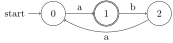
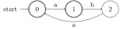
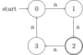
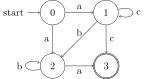

Prefix trees, although limited to tree structures rather than arbitrary graphs, generalize our standard notion of graphs in that they have both vertex labels (which we called colors) and edge labels (the actual characters of the strings). We briefly entertained the notion of generalizing prefix trees to prefix DAGs, but that did not turn out to be particularly useful for our intended application, namely a more efficient encoding of word lists. But when we take one more step and generalize prefix trees from trees to arbitrary graphs with colors and edge labels, we do get a very useful kind of object: finite-state automata.
A finite-state automaton (FSA) is a finite graph that has both edge labels and vertex labels. The edges are usually called arcs, and the vertices are called states (by now you’re hopefully accustomed to one and the same thing having many different names). We will freely switch between these terms depending on how much we want to emphasize the graph-theoretic nature of FSAs.
As was just said, FSAs have both edge labels and vertex labels. The edge labels are drawn from some arbitrary alphabet. The vertex labels are used to distinguish between four types of vertices, two of which are already familiar from prefix trees:
We already had normal and final vertices for prefix trees (they were color-coded as red and blue, respectively). Initial vertices are a new type. For prefix trees, it is obvious that we always want to start at the source, i.e. the root of the tree. An arbitrary graph may have multiple sources, however, or none at all, so instead the possible starting points have to be indicated explicitly by marking them as initial.
Any graph that satisfies the requirements above is a finite-state automaton. As with prefix trees, we can look at the strings that are associated with paths from an initial vertex to a final vertex and thus compute a (possibly infinite) set of strings.
Consider the FSA below, where initial states are marked by an edge labeled start and final nodes are doubly circled.

The shortest path from an initial to a final state goes from \(0\) to \(1\), or simply \(\left \langle 0,1 \right \rangle\). This path contains only an \(a\) along the way. So the string associated with this path is \(a\).
The next longer path is \(\left \langle 0,1,2,0,1 \right \rangle\), yielding \(\mathit{abaa}\). After that, one can follow the path \(\left \langle 0,1,2,0,1,2,0,1 \right \rangle\) and obtain the string \(\mathit{abaabaa}\). In sum, all the associated strings start with an \(\mathit{a}\), followed by 0 or more instances of \(\mathit{baa}\).
In the minor variant below, the initial state is also a final state.

As a result, the empty path is a valid path from an initial state to a final state. The empty path is associated with the empty string \(\varepsilon\). In addition, for every valid path ending in \(1\) there is now a valid truncated version missing the final step from \(0\) to \(1\). This also allows for the following strings: \(\mathit{a}\), \(\mathit{aba}\), \(\mathit{ababa}\), and so on.
The automaton below produces strings over \(\left \{ a \right \}\) of length \(l\) such that \(l \mod 4 = 2\).

FSAs are incredibly useful for modeling natural language. For example, the \(n\)-gram grammars we have seen are all special cases of FSAs.
Consider the SL grammar that bans word-final voicing for German:
\[ \left \{ \text{b} \ltimes, \text{d} \ltimes, \text{v} \ltimes, \text{z} \ltimes \right \} \]
We can convert this to an FSA that will move us into a non-final state whenever a voiced consonant is encountered. Since we only consider paths that end in a final state, it is impossible for a word to end in a voiced consonant. For the sake of succinctness, we denote all voiced consonants by \(Z\) and all other sounds by \(\neg Z\).
A strictly piecewise (SP) grammar is similar to an SL grammar except that each \(n\)-gram is a forbidden subsequence, rather than a forbidden substring. For example, the phenomenon of unbounded tone plateauing forbids low tones (L) from occurring between high tones (H) no matter how far apart the two high tones are. So LHLLLLL and LLLLLHL are well-formed, but not LHLLLHL. An SP-grammar can capture this by forbidding the subsequence HLH.
Equivalently, one can construct an FSA where seeing an L after an H moves us into a special part of the graph where all edges are labeled L. This way it becomes impossible to continue a string like LHLLL with an H.
The last example illustrates how vertices in an FSA serve as a limited kind of memory. The fact that we are in a specific vertex implicitly encodes that certain symbols were encountered along the path to this vertex, and by carefully placing edges from this vertex we can regulate how the computation proceeds from here. This connection between vertices and “memory states” is why the term is finite state automata.
The canonical definition of FSAs looks very different from the graph-theoretic one. This is because FSAs were invented independently, and none of the important theorems about them build on the insights of graph theory. I will first define FSAs in graph-theoretic terms, and then contrast those definitions with the canonical one from formal language theory.
A finite-state automaton (FSA) is a vertex- and edge-labeled (directed) graph \(A \mathrel{\mathop:}=\left \langle V, E, \Sigma, c, \ell \right \rangle\) such that
A vertex \(v\) is called initial iff \(I \in c(v)\) and final iff \(F \in c(v)\).
The definition above isn’t too different from that of graphs mostly straight-forward, except for \(\ell\) and \(c\). The role of \(c\) is to indicate whether a vertex is initial (mapped to \(\left \{ I \right \}\)), final (mapped to \(\left \{ F \right \}\)), neither (mapped to \(\emptyset\)), or both (mapped to \(\left \{ I<F \right \}\)). The labeling function \(\ell\), on the other hand, associates each edge with a set of symbols. This may surprise you because the examples so far had edges labeled with symbols. But this was a bit of a notational trick to obscure the use of sets.
In the devoicing automaton above, \(Z\) and \(\neg Z\) each represent multiple symbols. Each one of b, d, v, and z can take us from 0 to 1 in that automaton, which we represented with a single edge from 0 to 1 that is labeled \(Z\). More accurately, we should have four distinct edges from 0 to 1, one labeled b, one labeled d, one labeled v, and one labeled z. But we cannot have 4 distinct edges that connect the same vertices. Each one of those edges would be exactly the same pair \(\left \langle 0,1 \right \rangle\). So instead, we say that there is a single edge from \(0\) to \(1\) that is labeled \(\left \{ b,d,v,z \right \}\), indicating that any one of those symbols can take us from \(0\) to \(1\).
Alternatively, we could use a different definition of labeled edges where we do not have a labeling function \(\ell: E \rightarrow L\) from the set of edges to some fixed set \(L\) of edge labels, but instead \(E\) itself is a subset of \(V \times L \times V\). Explain why this removes the need for sets as edge labels.
Every path through the graph is also associated with a set of strings. Intuitively, these are all the strings that can be built by following along the path.
With every finite path \(p = \left \langle v_1, v_2, v_3 \ldots, v_{n-1}, v_n \right \rangle\) we associate a string set \(L(p) \mathrel{\mathop:}=\ell(\left \langle v_1, v_2 \right \rangle) \times \ell(\left \langle v_2, v_3 \right \rangle) \cdots \times \ell(\left \langle v_{n-1}, v_n \right \rangle)\). If \(p = \left \langle \right \rangle\), \(L(p) = \emptyset\). If \(p = \left \langle v_1 \right \rangle\), then \(L(p) = \left \{ \varepsilon \right \}\) if \(v_1\) is final, and \(\emptyset\) otherwise. Let \(P\) be the set of all paths from an initial state to a final state. Then the language recognized by \(A\) is \(\bigcup_{p \in P} L(p)\). For every stringset \(L \subseteq \Sigma^*\), \(L\) is regular iff \(L\) is recognized by some FSA.
The canonical definition of FSAs can avoid the complication of set-labeled edges by directly treating edges as triples of the form start, label, end.
A finite-state automaton (FSA) is a 5-tuple \(A \mathrel{\mathop:}=\left \langle \Sigma, Q, I, F, \Delta \right \rangle\) such that
Given a string \(s \mathrel{\mathop:}=\sigma_1 \cdots \sigma_n \in \Sigma^n\) (\(n \geq 0\)), a run of \(A\) over \(s\) is a tuple \(r \mathrel{\mathop:}=\left \langle q_0, q_1, \ldots, q_n \right \rangle\) such that \(q_0 \in I\) and for all \(0 < i \leq n\), \(\left \langle q_{i-1}, \sigma_i, q_i \right \rangle \in \Delta\). A run is accepting iff its last component is a final state. A string \(s\) is recognized or generated by \(A\) iff there is some accepting run of \(A\) over \(s\). The string language \(L(A)\) recognized/generated by \(A\) is the smallest set containing all strings recognized by \(A\).
A run is just a record of which states an automaton passes through when processing a string. The run is accepting if it starts in an initial state and ends in a final state. Note that one string may allow for multiple runs. A string is recognized by the automaton iff there is at least one accepting run.
Consider once more the automaton for unbounded tone plateauing.
In this automaton, the string LLLHH has only one run, which is \(000011\). Note how the run is one symbol longer than the string. That’s because we start in \(0\), and then the first symbol (i.e. L) moves us from \(0\) to \(0\). In more detail:
In the automaton below, the string \(\mathit{aaaaaaa}\) receives the run \(01230123\).
Now consider the automaton below.

The string \(\mathit{aba}\) has two distinct runs. One is \(0123\), the other one is \(0223\).
Draw an FSA that recognizes the language \(\mathit{a^* b^+}\), where \(a^*\) denotes “0 or more \(a\)s” and \(b^+\) is short for “1 or more \(b\)s”.
Draw an FSA that recognizes the language \(\mathit{a^+ b^+ a^*}\).
Consider once more the following automaton:
For each one of the following strings, list all accepting runs with respect to this automaton. If there is no such run, say so.
For each one of the following string languages, draw the smallest FSA that recognizes the language.